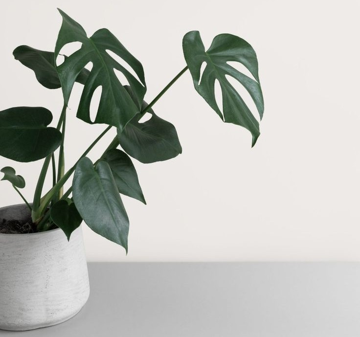

Simple decorations

A home isn't a home until you've decorated a little. People either don't decorate, or they go overboard and it doesn’t have the impact they were hoping for. Staying simple will help draw the eye where you want it to and make things pop like never before. Minimal touches like a cozy rug, a few framed photos, or a splash of greenery can transform a space without overwhelming it.
Creating Space That Feels Yours
Decorating isn’t about following trends, it’s about making your space feel personal and comfortable. A few intentional choices, like colors that calm you or items that hold meaning, can make your home feel uniquely yours. When you keep things simple, you avoid clutter and create a space that feels open, welcoming, and easy to live in.
Balance Over Excess
The key to impactful decorating is balance. Too much can feel chaotic, while too little can feel unfinished. By choosing a few statement pieces and letting them stand out, you create harmony in your home. Simplicity allows each item to shine, making your space not only beautiful but also functional and peaceful.